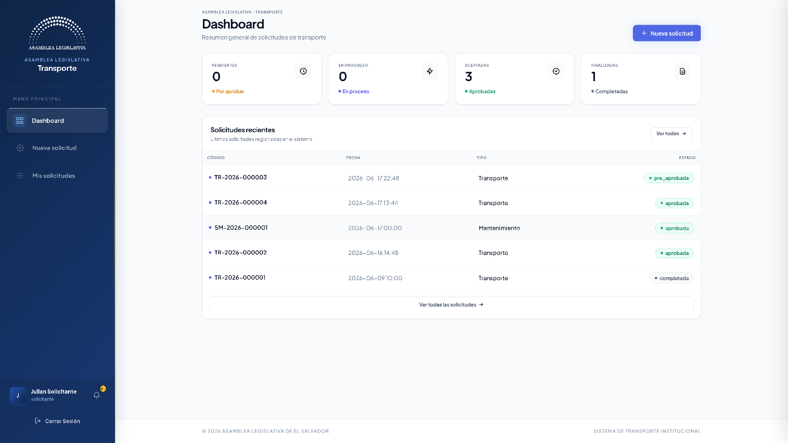
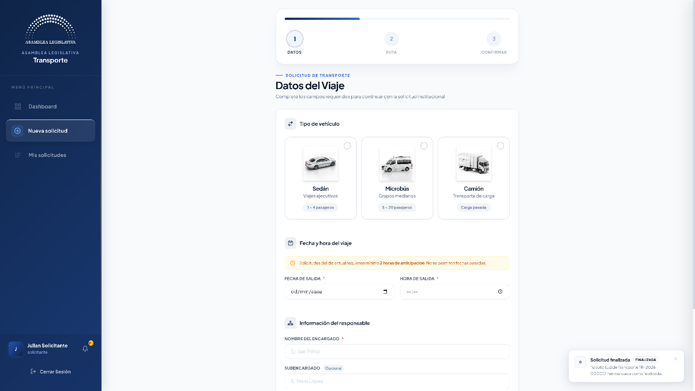
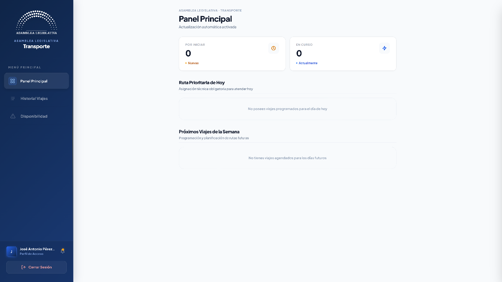
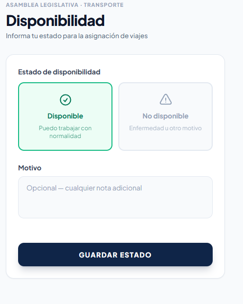
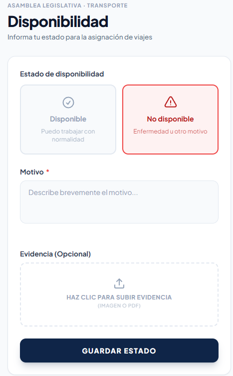
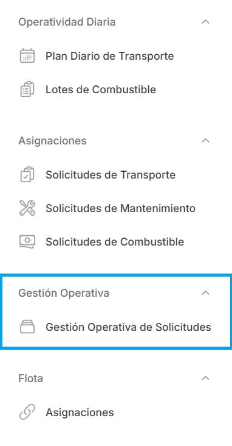
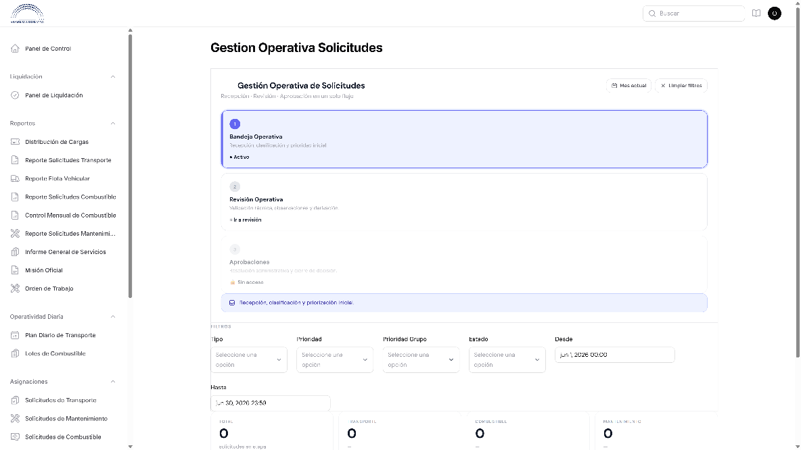

1. Los roles del sistema
Cada persona que ingresa al sistema tiene un rol (un "sombrero" que le dice qué puede hacer y qué no). Su jefe o el departamento de Sistemas le asigna el rol según su cargo u operatividad dentro de su departamento.
2. Rol: Solicitante
¿Cómo ingresa?
No ingresa al panel web. Usa la aplicación/pantalla de "Creación de Solicitudes de Transporte" para crear sus solicitudes.
Pantalla: Mis Solicitudes / Nueva Solicitud
La pantalla tiene dos pestañas principales en la parte superior:
"Mis Solicitudes"
Aquí ve todas las solicitudes que ha creado, ordenadas de la más reciente a la más antigua. Cada solicitud se muestra como una tarjeta con:
- Un código único (ej: TR-2026-000001).
- La fecha en que la creó.
- El motivo o actividad.
- Ticket de gestión.
- Una etiqueta de color que indica el tipo:
- Azul = Transporte
- Naranja = Mantenimiento
- Verde = Combustible
- Una píldora de estado con el color correspondiente (Pendiente, Aprobada, Rechazada, etc.).

"Nueva Solicitud"
Al hacer clic aquí, se despliega un asistente paso a paso (wizard) que lo guía para crear su solicitud sin abrumarlo:
| Paso | ¿Qué hace? |
|---|---|
| 1. Datos | Selecciona el tipo (transporte, combustible o mantenimiento), llena los datos básicos (fechas, destino, motivo). |
| 2. Rutas en Mapa | Marca en un mapa el origen y destino del viaje (solo para transporte). El sistema calcula la distancia. |
| 3. Confirmación | Revisa un resumen de todo lo que ingresó y confirma. Al enviar, la solicitud queda en estado "Pendiente". |

¿Quiénes acceden?
| Rol | ¿Qué ve aquí? |
|---|---|
| Solicitante | Solo sus propias solicitudes. Puede crear, ver detalle y cancelar. |
¿Qué sigue después de crear una solicitud?
El flujo normal es:
- Usted crea la solicitud → queda en Pendiente
- Un operativo la toma para revisarla → pasa a En Revisión
- El operativo la valida y la deja lista → pasa a Pre-Aprobada
- El jefe la revisa y decide:
- ✅ Aprobada → se procede a asignar recursos
- ❌ Rechazada → se le notifica el motivo
¿Qué puede hacer el rol de Solicitante?
| Qué | Explicación |
|---|---|
| Crear solicitudes | Puede pedir transporte, combustible o mantenimiento desde la aplicación móvil. |
| Enviar solicitudes | Una vez creada, la envía para su revisión. |
| Cancelar solicitudes | Si se arrepiente o hay un error, puede cancelar la solicitud mientras no haya sido preaprobada o aprobada. |
| Ver sus solicitudes | Consulta el estado de todas las solicitudes realizadas (si están pendientes, aprobadas, rechazadas, etc.). |
| Recibir correos | Le llega un correo personalizado cuando su solicitud es aprobada ✅ o rechazada ❌. |
¿Qué más puede hacer?
- Cancelar una solicitud: si se arrepintió o cometió un error, puede cancelar mientras la solicitud esté en estado "Borrador" o "Pendiente". Una vez que el operativo la toma en revisión, ya no puede cancelarla usted mismo.
- Ver el detalle: al hacer clic en una solicitud, puede ver toda la información, incluido el estado actual y los comentarios que haya dejado el operativo o el jefe.
- Recibir notificaciones: cuando su solicitud cambie de estado (aprobada, rechazada, devuelta con observaciones), el sistema le enviará un correo automático y podrá activar las notificaciones dentro de su propio dispositivo móvil.
❌ No puede ver solicitudes de otras personas.
❌ No puede aprobar ni rechazar nada.
❌ No puede modificar catálogos (vehículos, motoristas, etc.).
3. Rol: Motorista
¿Cómo ingresa?
No ingresa al panel web. Ve una pantalla especial diseñada para conductores, siempre ingresando con usuario y contraseña.

¿Qué puede hacer?
| Qué | Explicación |
|---|---|
| Ver mis viajes | Consulta los viajes que le asignaron en el mes, con fechas, horarios, origen y destino. |
| Iniciar viaje | Cuando sale hacia el destino, marca en el sistema que el viaje comenzó (registra la hora de salida). |
| Registrar llegada | Cuando llega al destino, marca la hora de llegada. |
| Iniciar retorno | Cuando emprende el regreso, lo registra. |
| Finalizar viaje | Cuando regresa a la Asamblea o al lugar de origen, marca el viaje como completado (el sistema calcula las horas reales y las agrega a su bitácora personal de manejo). |
| Cambiar mi estado | Puede marcarse como "No disponible" si está enfermo, de permiso, etc. Puede adjuntar un comprobante (como una incapacidad). El sistema avisa por correo a la jefatura. |


❌ No puede crear solicitudes de transporte.
❌ No puede aprobar ni rechazar nada.
❌ No ve información de otros motoristas.
❌ No puede modificar catálogos.
4. Rol: Operativo
¿Cómo se llama su pantalla principal?
"Gestión Operativa"

¿Qué puede hacer?
| Qué | Explicación |
|---|---|
| Ver todas las solicitudes entrantes | Ve los pedidos de transporte, combustible y mantenimiento que van llegando. |
| Tomar una solicitud para revisarla | Se asigna una solicitud a sí mismo para empezar a revisarla. |
| Cambiar la prioridad | Puede subir o bajar la prioridad de una solicitud (alta, media, baja) según el caso. |
| Poner observaciones | Si falta información, puede devolver la solicitud con comentarios para que el solicitante la corrija. |
| Derivar a otro compañero | Pasar la solicitud a otro operativo si él es quien debe revisarla. |
| Validar técnicamente | Revisa que todo esté correcto (fechas válidas, datos completos, recursos disponibles) y la manda a pre-aprobación. |
| Ver el detalle de solicitudes | Puede entrar a ver la información completa de cualquier solicitud. |
| Asignar vehículo y motorista | En las solicitudes de transporte, puede asignar qué vehículo y qué conductor van a realizar el viaje. |
| Asignar vales de combustible | Puede asignar las cargas de gasolina a las solicitudes de combustible aprobadas. |
| Registrar entrega/recepción de vehículos | Puede registrar cuándo se entrega un vehículo a un motorista y cuándo lo devuelve, con control de kilometraje, combustible y herramientas. |
| Ver el calendario de flota | Puede consultar un calendario visual con todos los viajes programados. |
| Ver lotes de combustible | Puede consultar los lotes de asignación de gasolina. |
| Ver el panel de liquidaciones | Puede consultar las liquidaciones (pero no liquidar). |

❌ No puede dar la aprobación final (eso es del encargado).
❌ No puede crear ni modificar vehículos, motoristas, proveedores, contratos.
❌ No puede ver la bitácora de auditoría.
❌ No puede gestionar usuarios ni roles.
❌ No puede borrar solicitudes.
5. Rol: Jefe
¿Qué puede hacer?
| Qué | Explicación |
|---|---|
| Aprobar solicitudes | Da el visto bueno final a las solicitudes de transporte, combustible y mantenimiento que ya fueron revisadas por el personal operativo. |
| Rechazar solicitudes | Cuando una solicitud no procede, la rechaza indicando el motivo (el sistema envía un correo automático al solicitante). |
| Reabrir | Vuelve a abrir una solicitud que ya había sido cerrada. |
| Asignar vehículo y motorista | Al igual que el operativo, puede asignar recursos a los viajes, pero su asignación/decisión es la final. |
| Asignar vales de combustible | Puede asignar las cargas a solicitudes de combustible aprobadas. |
| Firma digital | Al aprobar, puede dibujar su firma con el mouse (en una pantalla táctil o con el dedo) y queda guardada en el PDF. |
| Comparar sugerencias | Ve una comparación entre lo que el sistema sugiere, lo que asignó el operativo, y puede decidir cuál opción es mejor. |
| Ver y gestionar incidencias | Puede reportar y dar seguimiento a incidentes (daños, accidentes, fallas mecánicas). |
| Ver planificación de flota | Panel visual con tarjetas de cada vehículo, su estado y motorista asignado. |
| Ver el calendario de flota | Calendario con todos los viajes programados. |
| Ver bitácora de eventos | Consulta el registro de todas las acciones hechas en el sistema (quién hizo qué y cuándo). |
| Ver historial de estados | Consulta el historial de cambios de estado de cada solicitud. |
| Generar reportes | Puede descargar reportes en PDF, Excel y CSV de todos los tipos de solicitudes. |
| Generar PDF de misión oficial | Genera el documento formal de la misión para imprimir o archivar. |
| Ver el panel de liquidaciones | Consulta las liquidaciones y su estado. |
❌ No puede gestionar usuarios (solo TI y Admin).
❌ No puede gestionar roles y permisos.
❌ No puede gestionar departamentales.
❌ No puede modificar parámetros del sistema.
6. Rol: TI (Soporte Técnico)
¿Qué puede hacer?
Básicamente puede gestionar la mayoría de datos del sistema, con algunos accesos extras:
| Extra que puede hacer el TI | |
|---|---|
| ✅ Gestionar usuarios | Puede crear, editar, activar/desactivar usuarios. |
| ✅ Gestionar departamentales | Puede administrar las dependencias. |
| ✅ Acceso a roles (con permiso) | Puede asignar roles a los usuarios. |
| ✅ Ver todo | Tiene acceso a todas las pantallas del sistema. |
❌ Solo puede eliminar ciertos registros (algunas funciones de borrado están reservadas para el Administrador principal del sistema).
7. Rol: Super Admin (Administrador)
¿Qué puede hacer?
| Qué | Explicación |
|---|---|
| Todo | Puede hacer todo lo que permite el sistema. |
| Gestionar usuarios | Crear, editar y desactivar usuarios del sistema. |
| Gestionar roles | Asignar roles y permisos a los usuarios. |
| Gestionar parámetros | Puede modificar parámetros del sistema (configuraciones globales). |
| Gestionar departamentales | Administrar las dependencias. |
| Eliminar registros | Tiene permiso de borrar en todos los catálogos. |
| Crear lotes de combustible | Puede crear lotes de asignación de gasolina. |
| Ver bitácora e historial | Acceso completo a registros de auditoría. |
| Gestionar Catálogos | Crear, editar, eliminar todo lo relacionado a los catálogos que tiene el sistema. |
8. Rol: Liquidador
¿Qué puede hacer?
| Qué | Explicación |
|---|---|
| Ver panel de liquidaciones | Pantalla principal donde ve todas las solicitudes que esperan liquidación. |
| Ver detalle completo | Puede ver los montos solicitados, comprobantes (fotos de facturas, recibos). |
| Liquidar | Registrar el monto final validado y si el gasto coincide o tiene diferencias con lo solicitado. |
| Reportar incidencias | Si encuentra algo irregular, puede reportarlo como incidencia. |
| Generar PDFs | Descargar PDF de misión oficial, orden de trabajo, liquidación. |
| Ver solicitudes | Puede consultar las solicitudes de transporte, combustible y mantenimiento (solo lectura). |
❌ No puede crear, editar ni borrar nada en los catálogos.
❌ No puede aprobar ni rechazar solicitudes.
❌ No puede ver la planificación de flota.
❌ No puede gestionar usuarios.
❌ No puede ver la bitácora de auditoría.
9. Mapa rápido: ¿qué puede ver y hacer cada quién?
| Pantalla / Función | Solicitante | Motorista | Operativo | Jefe | TI | S.Admin | Liquidador |
|---|---|---|---|---|---|---|---|
| Crear solicitudes | ✅ | ❌ | ❌ | ❌ | ❌ | ✅ | ❌ |
| Ver solicitudes de transporte | ❌ | ❌ | ✅ | ✅ | ✅ | ✅ | ✅ |
| Ver solicitudes de combustible | ❌ | ❌ | ✅ | ✅ | ✅ | ✅ | ✅ |
| Ver solicitudes de mantenimiento | ✅ | ❌ | ✅ | ✅ | ✅ | ✅ | ✅ |
| Aprobar/Rechazar solicitudes | ❌ | ❌ | ❌ | ✅ | ✅ | ✅ | ❌ |
| Asignar vehículo y motorista | ❌ | ❌ | ✅ | ✅ | ✅ | ✅ | ❌ |
| Asignar vales de combustible | ❌ | ❌ | ✅ | ✅ | ✅ | ✅ | ❌ |
| Gestionar vehículos | ❌ | ❌ | ❌ | ✅ | ✅ | ✅ | ❌ |
| Gestionar motoristas | ❌ | ❌ | ❌ | ✅ | ✅ | ✅ | ❌ |
| Gestionar proveedores | ❌ | ❌ | ❌ | ✅ | ✅ | ✅ | ❌ |
| Gestionar contratos | ❌ | ❌ | ❌ | ✅ | ✅ | ✅ | ❌ |
| Gestionar usuarios | ❌ | ❌ | ❌ | ❌ | ✅ | ✅ | ❌ |
| Gestionar roles | ❌ | ❌ | ❌ | ❌ | ✅* | ✅ | ❌ |
| Ver calendario de flota | ❌ | ❌ | ✅ | ✅ | ✅ | ✅ | ❌ |
| Ver planificación de flota | ❌ | ❌ | ✅ | ✅ | ✅ | ✅ | ❌ |
| Registrar entrega/recepción vehículo | ❌ | ❌ | ✅ | ✅ | ✅ | ✅ | ❌ |
| Liquidar solicitudes | ❌ | ❌ | ❌ | ❌ | ❌ | ✅ | ✅ |
| Gestionar lotes de combustible | ❌ | ❌ | ✅ (ver) | ✅ | ❌ | ✅ | ❌ |
| Reportar incidencias | ❌ | ❌ | ❌ | ✅ | ✅ | ✅ | ✅ |
| Ver bitácora de eventos | ❌ | ❌ | ❌ | ✅ | ✅ | ✅ | ❌ |
| Generar reportes PDF/Excel/CSV | ❌ | ❌ | ✅ | ✅ | ✅ | ✅ | ✅ |
| Cambiar mi estado (motorista) | ❌ | ✅ | ❌ | ❌ | ❌ | ✅ | ❌ |
| Iniciar/Finalizar viaje | ❌ | ✅ | ❌ | ❌ | ❌ | ✅ | ❌ |
* TI = con permiso especial.
10. Glosario de estados
Los estados (en orden) son:
| Estado | Significado |
|---|---|
| Borrador | La solicitud fue creada pero no enviada. |
| Pendiente | Enviada, esperando que alguien la revise. |
| En revisión | Un operativo la está revisando. |
| Pre-aprobada | El operativo ya la validó, esperando la decisión del jefe. |
| Aprobada | El jefe le dio el visto bueno. |
| Programada | (solo transporte) Ya aprobada, esperando asignación de vehículo. |
| Asignada | Ya tiene recursos asignados (vehículo, motorista, vales). |
| En ejecución | El viaje/mantenimiento está en proceso. |
| Completada | Finalizada exitosamente. |
| Liquidada | Ya fue revisada y cerrada financieramente. |
| Rechazada | No fue aprobada (con motivo). |
| Cancelada | El solicitante la canceló. |
11. Preguntas frecuentes
1. No veo ninguna pantalla al entrar
Revise con su jefe o con el departamento de Sistemas qué rol tiene asignado. Si su rol es "Solicitante", usted no ingresa al panel web, sino a una aplicación diferente. Y lo mismo si usted es "Motorista".
2. Quiero aprobar una solicitud, pero no me aparece el botón
Revise que su rol sea jefe. Si es Operativo, usted solo puede revisar y validar, no aprobar.
3. Recibí un correo de "solicitud aprobada" pero no sé qué sigue
- Si es de transporte: espere a que le asignen vehículo y motorista. Luego el motorista iniciará el viaje el día y a la hora que se solicitó.
- Si es de combustible: espere a que le asignen las cargas. Luego podrá completar la solicitud subiendo los comprobantes.
- Si es de mantenimiento: el taller procederá a hacer el trabajo.
4. ¿Cómo sé en qué estado está mi solicitud?
Consulte la sección 10 (Glosario de estados) de este manual para entender cada estado. Además, el sistema le enviará un correo cada vez que su solicitud cambie de estado.
Si encuentra errores inesperados, datos que no se guardan, o cualquier comportamiento extraño, repórtelo al departamento de TI. Incluya el código de la solicitud (ej: ST-2026-000123) y describa qué estaba haciendo cuando ocurrió el problema.